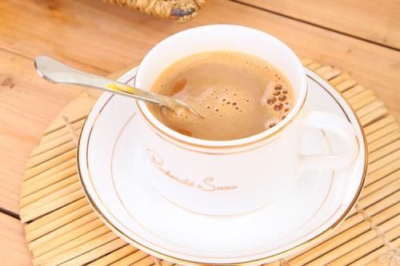

来杯咖啡吗?
来杯咖啡吗?

-
种类 价格 拿铁 ￥50 焦糖玛奇朵 ￥90 卡布奇诺 ￥60 奥瑞白 ￥70 美式咖啡 ￥80 -
拿铁
“拿铁”是意大利文"atte"的音译，拿铁咖啡拿铁咖啡(6张)“拿铁”是意大利文"atte"的音译，拿铁咖啡拿铁咖啡(6张) 拿铁咖啡(CoffeeLatte)是花式咖啡的一种,是咖啡与牛奶交融 的极至之作。意式拿铁咖啡为纯牛奶加咖啡，美式拿铁则将 部分牛奶替换成奶泡，本地的拿铁多为此种。那句著名 的“我不在咖啡馆，就在去咖啡馆的路上”是- -位音乐家在维 也纳说出来的。维也纳的空气里，永远都飘荡着音乐和拿铁 (Latte)咖啡的味道。
-
焦糖玛奇朵

焦糖玛奇朵（英文：Caramel Macchia to）是在香浓热牛奶上加入浓缩咖啡、香草，再淋上纯正焦糖而 制成的饮品，融合三种不同口味。Macchiato意大利文，意思是 “烙印”和“印染”，中文音译“玛奇朵”。“Caramel”意思是焦糖。 焦糖玛琪朵，寓意“甜蜜的印记”。有人无法消受酱油膏一般又 浓又苦的espresso， 花式咖啡或加奶泡或加糖浆等添增美味。花式咖啡端上桌除了风 味还有一样享受就是欣赏美丽的花样，热咖啡多用瓷杯，在表面 做花样有两种方式：用焦糖在奶泡上绘图以及拉花，前者较易上手先练习。
-
卡布奇诺
卡布奇诺是一种加入以同量的意大利特 浓咖啡和蒸汽泡沫牛奶相混合的意大利咖啡。此时咖啡的颜色， 就像卡布奇诺教会的修士在深褐色的外衣上覆上一条头巾一样，咖 啡因此得名。传统的卡布奇诺咖啡是三分之一浓缩咖啡，三分之一 蒸汽牛奶和三分之一泡沫牛奶，并在上面撒上小颗粒的肉桂粉末。
-
奥瑞白

奥瑞白咖啡并不是指咖啡的颜色是白色的，而 是采用特等Liberia（利比里亚） 、Arabica（阿拉比卡）和 Robu ta（罗布斯塔）咖啡豆及特级的脱脂奶精原料，经中轻度低温烘焙及 特殊工艺加工后大量去除咖啡碱，去除高温碳烤所产生的焦苦与酸涩 味，将咖啡的苦酸味、咖啡因含量降到最低，甘醇芳香不伤肠胃，保 留咖啡原有的色泽和香味，口感爽滑，纯正，颜色比普通奶咖更清淡 柔和，淡淡的奶金黄色，故得名为白咖啡。
-
美式咖啡
美式咖啡” （英文：Americano，意大利语：Caffè Americano）咖啡 的一种，是最普通的咖啡。是使用滴滤式咖啡壶所制作出的黑 咖啡，又或者是意式浓缩中加入大量的水制成。 美式咖啡口味比较淡。因为一般的萃取时间相对较长（大 概四五分钟），所以咖啡因含量较高。你可以在纯粹的黑咖啡 ，加一点点糖、奶；你也可以欧式一点，像非洲和阿拉伯地区那 样在咖啡中加入肉桂等香料；如果你不习惯咖啡苦涩味，也可以 在你的咖啡里加一点你喜欢的果汁……不过，喝一杯原汁原味的黑 咖啡，能够品尝到咖啡本身浓郁的风味，会被看作是品尝咖啡的 行家里手。不论怎么喝，品尝咖啡也还是有一些讲究和知识的。